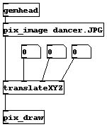

The pix objects are GEM objects which deal with pixels. They do everything from loading in images to applying filters to the data. The objects in this section of the manual only load in pix data from outside sources. How you actually display the image is up to you. The most common usages are with [pix_draw] and [pix_texture].
Warning: [pix_draw] is almost always slower than [pix_texture]. Because [pix_draw] is easier to use than [pix_texture], it is used in these examples. However, in any real usage or piece, [pix_texture] should always be used instead. [pix_draw] is slow because PC graphics accelerators do not provide hardware acceleration for that functionality. [pix_texture] does have hardware acceleration and will be much faster.
[pix_image] - load in an image
[pix_multiimage] - load in multiple images
[pix_movie] - load in a movie file
[pix_video] - use a real time video source


As is the case with every GEM chain, this patch starts with the [gemhead] object. The next object is [pix_image], which actually loads the image. [pix_image] makes the file dancer.JPG the current pixel data, which will be used in all subsequent operations in the chain. The [translateXYZ] object is used to move the image around. Finally, the [pix_draw] object renders the pixel data to the screen.
The patch mentions that changing the Z in [translateXYZ] does not change the size of the image, as would occur with a geo object like [square]. This is because [pix_draw] simply draws the pixel at the current raster position, without any transformation. If you want to change the size on the fly and rotate the image, you need to texture map the pix, which is described in the next section.

Basically, the * in the file name is replaced by the number that you pass in. This allows you to play sequences of images with random access. The one downside is that every image is loaded into memory when the object is created, so you need to have a lot of RAM to use it.

A key fact of [pix_movie] is that it immediately sends the movie data to OpenGL as a texture map. This means that you do not need the [pix_texture] object in your chain. This also means that you cannot process the movie data with pix objects. The main reason for this is that it removes the need for a copy of all of the movie data. If you want to apply some image-processing, you will have to use [pix_film] (and [pix_texture] for texture-mapping).
Some of the geos will not texture map the [pix_movie] data correctly. Cone and sphere do not use texture coordinates when they are provided, so when you display a movie on one of these objects, you will have a black region (unless your movie size is a power of two...however, most movies are 320x160 pixels or something). This will be fixed in a future release.

You can play with [pix_video] with the patches in 04.video/. The patches are explained in more depth in the advanced section of the GEM manual.